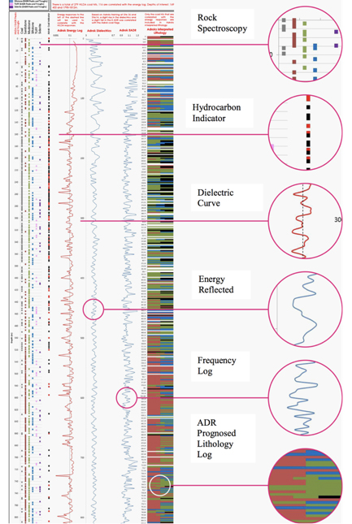

Australian Society of Exploration Geophysicists, 2015
SUMMARY
We present an overview of the Adrok radar scanning technology and describe experimental results that suggest that ground penetrating radar can be utilized to much greater depths in selected environments than commonly assumed. High frequencies were found to penetrate very little, but the low frequency component had very low losses. Results were analysed to estimate the skin depth and interpreted in terms of a constitutive model incorporating Maxwell’s equations with conductivity and polarization losses. To explain these results we hypothesize that moisture penetrates limestone only relatively superficially and once the outer wet layer is penetrated the conductivity and therefore the losses are greatly reduced. In a second experiment we successfully detected the reflection of the radar pulse from a body of water through 350m of rock. A numerical simulation of the model confirmed that these results do not contradict theoretical expectations for dry limestone.
Key words: Atomic Dielectric Resonance (ADR), Adrok, broadband pulsed radar, spectroscopy.
INTRODUCTION
Ground penetrating radar (GPR) is a mature technology with applications in many areas, see for example (Daniels, 2004) for an overview. Almost all applications are restricted to imaging the subsurface up to a rather shallow depth, because of large losses of the signal when propagating through materials with free ions, which results is conductive losses determined by the soil conductivity. However in environments where these losses are low the depth penetration of GPR increases dramatically, allowing imaging up to depths of several kilometres, for example through the polar ice on Mars (Jordan et al., 2009) and Antarctica (Berthelier et al., 2005).
Adrok has developed a radar based imaging technology which has been available to the market for over five years under the name Atomic Dielectric Resonance (ADR) with the express purpose of extending the depth range of conventional GPR surveys, in addition to introducing other novel methods such as spectroscopy.
This paper will discuss the technology in more detail and then summarize the results of experiments which were performed to quantify the depth penetration possible with the system, and to explain the results theoretically with a propagation model based on Maxwell’s equations coupled to a ground model.
METHODS
When surveying for minerals, oil, and gas, companies will more often than not employ the staple methods of seismic and physical sampling, such as drilling. In recent years Adrok has been undertaking work with industry partners to explore different areas of the planet in an environmentally friendly way seeking to make the technology competitive on a global scale to search for hydrocarbons, minerals and general lithology.
Field surveys using ADR (Figure 2) can be carried out rapidly, usually with several sites of interest being scanned in a single day. The results are made available after processing using a suite of analysis software. Processing of the field data is the more time consuming aspect of the procedure. However, if one considers that for a typical survey the time to completely analyse the results might be two weeks or slightly more, this compares very favourably with other techniques.
In the field, three main types of surveys are conducted: WARR scans, P-scans, and STARE scans. A STARE scan repeatedly (typically 5000 times) transmits a pulse into the ground from a fixed location and the response is measured as a set of time domain traces at the same location. The repeats allow statistical analysis and noise reduction through techniques such as stacking and correlation analysis. A P-scan is similar, except that the transmitter-receiver assembly is moved at a constant speed over a scan line on the surface, to produce a time-domain image of a slice of the subsurface. This is probably the most widely used GPR scanning method. The WARR scan collects traces at different separations between transmitter and receiver and is used to map time to depth using hyperbolic moveout tracking and velocity spectrum analysis, similar to techniques used in seismic data analysis. It is essentially a triangulation procedure. In addition the WARR analysis provides a map of the dielectric permittivity (directly related to velocity) as a function of depth, which is an important indicator for the material composition of the ground.
Data processing involves several steps. A WARR analysis produces depth information from the time registered imaged traces. With the time to depth map obtained from the WARR analysis we can convert the time-domain STARES and P- scans into the spatial domain and localize features according to depth. Dominant reflections are extracted from the STARE scans and classified according to reliability using statistical methods. This allows the detection of very weak reflections that are not apparent from a simple visual inspection of the image display of the data, and remove artefacts due to environmental noise. Finally, the reflections are analysed for spectral content and subsequently compared to a database of material signatures.
ADR can be trained on known geology to build up a reference database against which to correlate data collected from new, unknown locations. To this end a test chamber has been constructed that is portable so it can be taken to different sites around the world (Figure 3). An example of a spectral analysis plot is shown in Figure 4, showing differences in ADR reflected energy amplitudes (y-axis) at different frequencies (MHz), in the x-axis, of a variety of rock types - Calcite, Galena, Marcasite and Sphalerite. Using spectroscopic techniques in this way different rock types can be classified and re-identified in new locations in the field When combining spectroscopic classifications of materials in the laboratory with data collected in the field, a powerful interpretation is obtained. The output from the processing gives information in a lithological form showing various indicators extracted from the data. An example is shown in Figure 5. Indicators include (a) dielectric permittivity, which is an indicator for moisture content; (b) spectral lines including spectral statistics (energy, frequency and phase); (c) material resonance; (d) material reflectivity and (e) density and hardness indices; (f) estimates of grain size as an estimate of porosity (g) most importantly range or depth (which is qualified with an error factor for each layer tracked) of each material layer identified or classified from time zero at ground level. These analysis produce what we call “virtual boreholes”. Typically several virtual boreholes are combined to produce a subsurface feature map, combined with a more conventional P-scan image.
The ADR signal generator produces a pulse of electromagnetic energy (frequencies typically range between 1MHz to 70MHz) that is fed to the antenna and is transmitted into the ground. Once the signal has been sent to the transmitting antenna a signal is sent to the receiving control unit to synchronise collection of the subsurface reflected data, which is collected through the receiving antenna and then digitized. The transmitted pulse is depicted in Figure 1 where we also show the power spectrum. It is not the usual localized pulse with a single centre frequency but a more complicated waveform. The higher frequency components allow accurate localization at shallow depths, but attenuate rapidly in the ground, while the lowest frequency component around 3Mhz can penetrate much deeper. We thus combine the advantage of high spatial resolution at high frequencies with the advantage of greater depth penetration at low frequencies at the expense of requiring more sophisticated analysis.
RESULTS
In this section we summarize the results of experiments that were performed to quantify and explain the depth range of the scanner. For more details we refer to (van den Doel et al., 2014). We conducted transillumination experiments 700m below the surface within the historical mined out workings of the Pend Oreille zinc and lead mine, Washington State, USA. Radar pulses were sent and recorded in the access tunnels through a limestone pillar along five paths through distances of 16m, 26m, 55m, 67m, and 121m. Analysis of the emerging pulse indicated that most of the low frequency losses occur relatively close to the walls, whereas the losses in the interior are much less. The high frequency losses were however consistently high, in accordance with conventional GPR lore.
The experimental results were used to fit parameters of a propagation model based on Maxwell’s equations and a material model incorporating conductive and polarization losses. It was found that the upper limit of the conductivity in the interior of the pillar was about 0.075mS/m. Our model does not incorporate spreading losses and scattering losses, so the actual conductivity will be even smaller than this, as this will be an underestimation. The skin depth (depth at which the signal attenuates by a factor 1/e) at 3Mhz for this conductivity is about 160m.
This value is considerably lower than what generally is assumed when discussing radar losses in soil and it would be desirable to confirm this value with independent measurements. It is however extremely difficult to measure conductivity deep inside rock because an extracted sample will rapidly absorb moisture and the conductivity will increase. Values for limestone conductivity reported in the literature vary widely, for example (Telford et al., 1990) quotes a range of 1μS/m to 20mS/m. The actual value depends on complicated and not poorly understood details of how pore water is embedded in the rock, and which solvents are present in the solution. See for example Revil (2013). (Schon 2004) quotes values from 10mS/m (wet) to s =10μS/m (dry). This suggests a rather low water content of the interior rock in our study.
A second experiment was performed to determine if reflections from the pulse could be detected and distinguished from clutter at a large depth of 350m (i.e., 700m two-way travel). The second experiment was performed in the same mine at a location 350m under the Pend Oreille river which we used as a known target. The pulse was aimed upwards through the ceiling of the tunnel and the receiver was placed close to it. After denoising and correlation analysis the reflection from the bottom of the river was apparent at the correct distance of 350m, using the propagation velocity measured from the trans illumination experiments (van den Doel et al., 2014).
Figure 1. Transmitted ADR pulse and its power spectral density. Figure 2. ADR Field Scanner System. Figure 3. ADR Laboratory Spectroscopy Training System. Figure 4. ADR Spectral Lines based on energy v’s frequency measurements (example of one of the ADR “spectroscopy” measurements). Calcite shown in blue, Galena in orange, Marcasite in grey and Sphalerite in yellow. CONCLUSIONS
The results from experiments and commercial field surveys, as well as the numerical model simulation suggest that the exploration depth of pulsed radar can be increased significantly by including a low frequency component. The conductivity we found to be consistent with our data was less than 0.075mS/m translating in a skin depth of about 160m.
If these results hold for other rock types, deeply penetrating radar scanning can potentially become an attractive geophysical exploration technique in selective environments where there is no highly conductive near-surface layer, or where this layer is thin enough to penetrate. We believe that these experiments are encouraging and warrant further investigations.
ACKNOWLEDGMENTS
We wish to thank the University of British Columbia, and CitiGold.